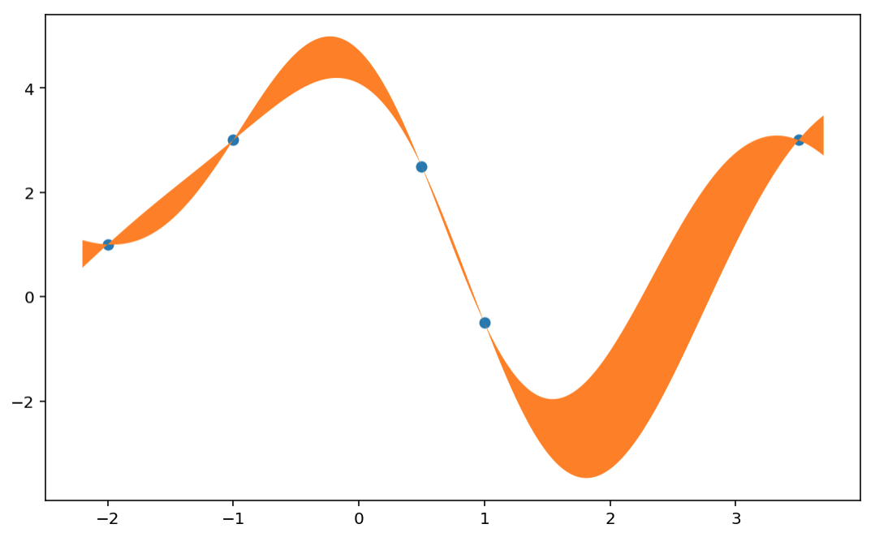

📚 Diving into the math...
Community Bonding Week 2
My second week was spent mostly diving into textbooks to better understand what Dirichlet processes entail. To do so, I started with a brief revision of probability theory and reviewing Gaussian processes. Why? Given that I am should be studying for my comprehensive exams, I thought that I better understand what it means to posit priors on the space of probability measures. As recommended by my mentors, a good starting point would be to look at Gaussian processes (GP) since I found Dirichlet processes very difficult to wrap my head around. GPs are convenient priors for continuous functions and they seem to be slightly more easy to understand.
To document my learning process of statistical theory, I intend to summarize some key theoretical underpinnings in this blog. We’ll see where this goes! In light of all the math below, here one of my favorite Calvin and Hobbes strip.
As a side note, I am part of the organizing committee for the 2021 Canadian Statistics Student Conference which will be happening this Saturday, June 5. Quebec also just announced that the administration of second vaccination doses have been sped up. All lot is going on, and it’s all exciting!
1 - Probability Theory
This section follows closely Chapters 1 - 3 from Probability with Martingales. For a more in-depth read, Probability and Measures sounds great but challenging. The main reason why I go through some (probably way too dense/deep) theory before jumping into Dirichlet processes (DP) is because DPs is a suitable prior over the space of probability measures.
1.1 - What is a measure?
Formally, we start with $(S, \Sigma)$ be a measurable space where $S$ is some topological space and $\Sigma$ is the $\sigma$-algebra generated by open subsets of $S$. A mapping $\mu: \Sigma \rightarrow [0, +\infty]$ on $(S, \Sigma)$ is a measure if:
- (1) $\mu(A) \geq 0$ for all $A \in \Sigma$ and;
- (2) $\mu$ is countably additive, i.e. $\mu\left(\cup_{i=1}^\infty A_i\right) = \sum_{i=1}^\infty \mu(A_i)$ and $\mu(\emptyset) = 0$.
Transitioning from general, super abstract sets, $\sigma$-algebras and crazy measures, we usually define a probability triple $(\Omega, \mathcal{F}, \mathbb{P})$ as followed:
- $\Omega$: sample space;
- $\mathcal{F}$: set of possible events $E \subseteq \Omega$ (and is a $\sigma$-algebra);
- $\mathbb{P}$: probability measure, i.e. a measure $\mu$ such that $\mu(\Omega) = 1$.
Another more intuitive way we can envision measurable spaces is as $(\Omega, \mathcal{F}) \stackrel{\text{in words}}{=}$ (sample space, family of events).
1.2 - What is a random variable?
In statistics, we are interested in random variables and their properties. Random variables assign values to possible events in $\mathcal{F}$ on which probability functions $\mathbb{P}$ can be evaluated. Given a measurable space $(S, \Sigma)$, a class of functions $h: S \rightarrow \mathbb{R}$ is $\Sigma$-measurable if, for all $A \in \mathcal{B}$, its inverse $h^{-1}: \mathcal{B} \rightarrow \Sigma$ has the following property:
\begin{align*} h^{-1}(A) = \{s \in S \,\vert\, h(s) \in A \} \end{align*}
where $\mathcal{B} := \sigma$(open sets of $\mathbb{R}$) is the Borel set.
With this, a random variable is “simply” defined to be a mapping $X: \Omega \rightarrow \mathbb{R}$ that is $\Sigma$-measurable.
1.3 - Summary of probability theory (already?)
The overarching idea is that, for a probability space (also called probability triple) $(\Omega, \mathcal{F}, \mathbb{P})$, we have the following mappings outlined:
\begin{align*}
\Omega &\stackrel{X}{\rightarrow} \mathbb{R}\\\
\mathcal{B} \stackrel{X^{-1}}{\rightarrow} & \mathcal{F} \stackrel{\mathbb{P}}{\rightarrow} [0, 1] .
\end{align*}
2 - Bayesian nonparametrics
When performing inference, we often posit parametric assumptions on the data-generating mechanism. However, this can be restrictive especially when we don’t know the functional form of such underlying mechanism. In these situations, we can turn to nonparametric methods which, as the name suggests, do not posit distributional assumptions and hence protects against model misspecification. In Bayesian nonparametrics (BNP), we can put priors on functions or probability distribution themselves. As Peter Mueller once said when talking about ANOVA DDPs, a type of Dirichlet process: “A BNP is always right in the sense, no matter the true distribution, our prior always puts some probability mass in some neighborhood of the truth so we can learn about it. It has full support.” (see video here)
2.1 - Gaussian processes
By definition, a GP is a stochastic process in which any finite collection of observations $\mathcal{D} = \{(x_i, y_i = f(x_i) \}_{i=1}^N$ follows a multivariate normal (MVN) distribution with $N$-dimensional mean $\mu(\pmb{x})$ and a $N \times N$ covariance matrix $\kappa$ where the $i$, $j$th entry can be specified as followed:
\begin{align*} \kappa_{ij} = \kappa(x_i, x_j) = \sigma^2_f \,\text{exp} \Big\{-\frac{1}{2\ell^2} (x_i - x_j)^2 \Big\} \end{align*}
for some $(\sigma^2_f, \ell^2) \in \mathbb{R}_+^2$. It is to my understanding that $\mu(\pmb{x})$ is often assumed to be $\vec{0}$ (for reasons that are unknown to me at the moment).
An interesting way of using GPs as prior distributions is that, say we have $N$ observations $(x_1, f(x_1)), \dots, (x_N, f(x_N))$, we want to perform inference on the unknown function $f$ without any making any assumptions on its functional form. Because any collection of observations $\sim$ MVN, we are able to form predictions for $f(x_\star)$ for any unobserved $x_\star$. This stems from a well-established property of MVNs in that, if $(X_1, \dots, X_N) \sim \text{MVN}$, $\vec{\pmb{X}}_{\mathcal{I}_1} \, | \, \vec{\pmb{X}}_{\mathcal{I}_2} \sim \text{MVN}$ where $\mathcal{I}_1 \cup \mathcal{I}_2 = \{1, \dots, n\}$ and $\mathcal{I}_1 \cap \mathcal{I}_2 = \emptyset$. Using this, we have that:
\begin{align*}
\Big\{f(x_\star) \, | \, x_\star, \pmb{x}, f(\pmb{x})\Big\} &\sim \text{MVN}(\mu_\star, \Sigma_\star)\\\
\text{where } \mu_\star &= \mu(\pmb{x}) + \kappa_\star^\text{T} \kappa^{-1}\big(f(\pmb{x}) - \mu(\pmb{x})\big)\\\
\kappa_\star &= \kappa_{\star \star} - \kappa_{\star}^\text{T} \kappa^{-1} \kappa_{\star}
\end{align*}
where $\kappa_{\star} = \kappa(\pmb{x}, x_\star)$ and $\kappa_{\star\star} = \kappa(x_\star, x_\star)$.
Brief simulation
To visualize the results above, I wrote a short notebook that shows the 95% equi-tailed credible intervals for all $x$-values. Code is available here!
2.2 - Dirichlet processes
Stay tuned, I hope to talk about DPs in my next GSoC blogpost!
Larry Dong
PhD Student in Biostatistics
Statistics and data analysis are my strengths, but medical research is my passion.